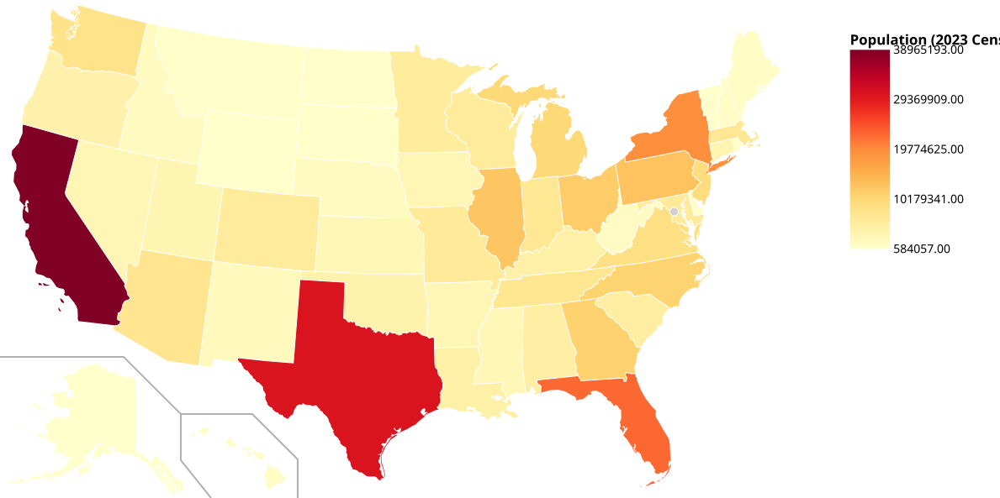
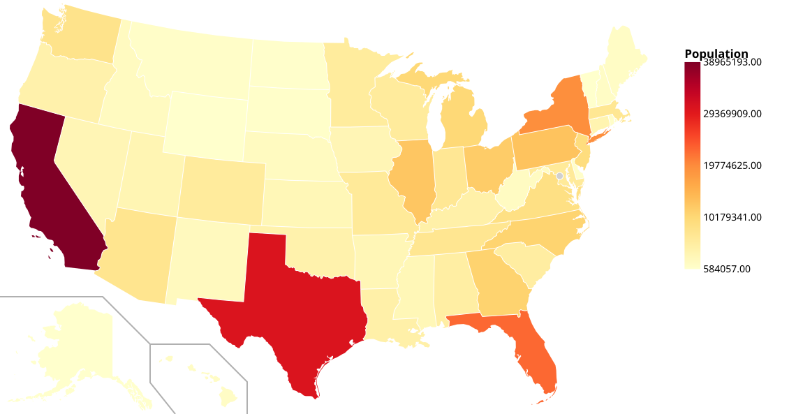
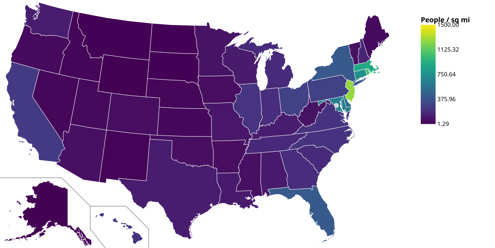
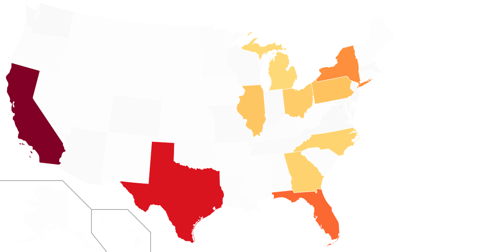
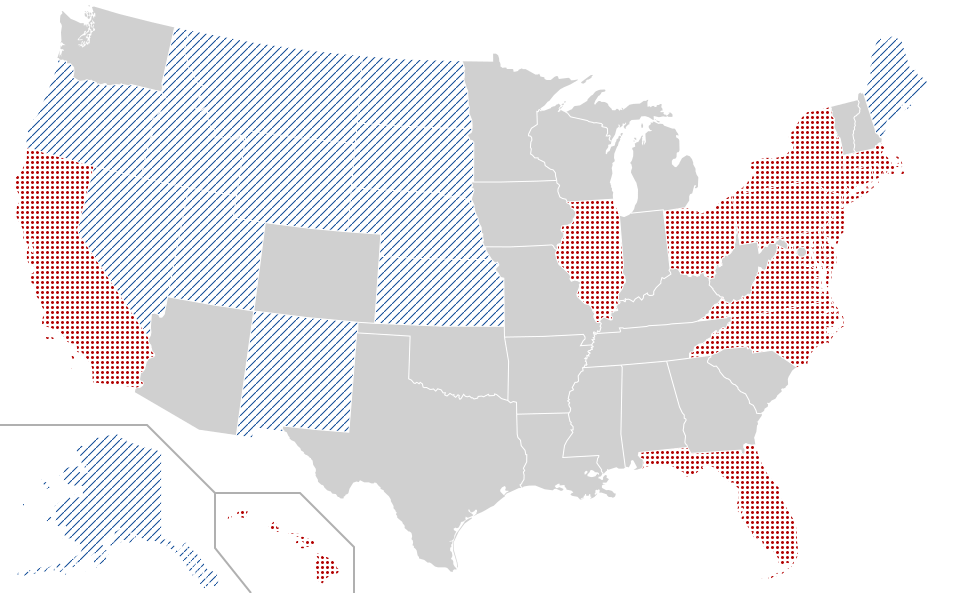
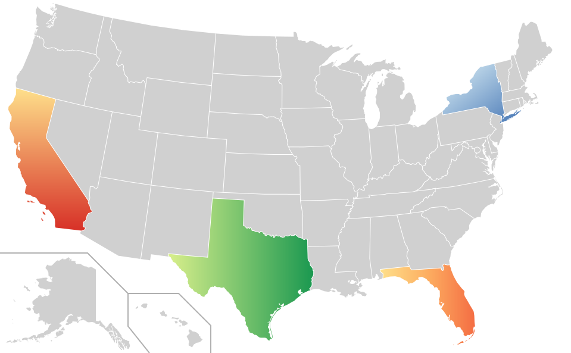

pathy_svg
pathy_svg — Color arbitrary SVG paths by data values.
Quick Start
Heatmap
from pathy_svg import SVGDocument
doc = SVGDocument.from_file("map.svg")
data = {"stomach": 0.5, "liver": 0.8, "heart": 0.3}
doc.heatmap(data, palette="YlOrRd").legend(title="Expression").save("output.svg")
Gradient and Pattern Fills
from pathy_svg import SVGDocument, GradientSpec
doc = SVGDocument.from_file("map.svg")
# Linear gradient
doc.gradient_fill({
"stomach": GradientSpec(start="#ff0000", end="#0000ff"),
}).save("gradient.svg")
# Pattern fill
doc.pattern_fill({"liver": "crosshatch", "heart": "dots"}).save("patterned.svg")
Stroke Mapping
doc.stroke_map(data, width_range=(1, 5), palette="Reds").save("strokes.svg")
Highlight / Dim
doc.highlight(["stomach", "liver"]).save("highlighted.svg")
Group Aggregation
doc.heatmap_groups(data, agg="mean", palette="YlOrRd").save("groups.svg")
Layers
result = (
doc.layers()
.add("heat", lambda d: d.heatmap(data, palette="YlOrRd"))
.add("labels", lambda d: d.annotate({"stomach": "S", "liver": "L"}))
.flatten()
)
result.save("layered.svg")
Working with DataFrames
pathy_svg integrates with pandas. Load a CSV and create a heatmap in three lines.
import pandas as pd
from pathy_svg import SVGDocument
# Load real 2023 US Census data from CSV
df = pd.read_csv("state_population.csv")
print(df.head())
# state population land_area_sq_mi density
# 0 CA 38965193 155779 250.1
# 1 TX 30503301 261232 116.8
# 2 FL 22610726 53625 421.6
# 3 NY 19571216 47126 415.3
# 4 PA 12961683 44743 289.7
doc = SVGDocument.from_file("us_states.svg")
colored = doc.heatmap_from_dataframe(
df,
id_col="state",
value_col="population",
palette="YlOrRd",
)
colored.legend(title="Population (2023 Census)").save("from_dataframe.svg")

Other DataFrame helpers:
# Load SVG + extract data in one call
doc, data = SVGDocument.from_dataframe(
"us_states.svg", df, id_col="state", value_col="population"
)
# Convert DataFrame column to dict for any method
from pathy_svg import dataframe_to_dict
pop = dataframe_to_dict(df, id_col="state", value_col="population")
Example Workflow: US States
A walkthrough using real 2023 US Census data on a public-domain US states map. Each step shows the code and the resulting SVG.
1. Population Heatmap
Color every state by its population using the YlOrRd colormap.
from pathy_svg import SVGDocument
doc = SVGDocument.from_file("us_states.svg")
population = {"CA": 38_965_193, "TX": 30_503_301, "FL": 22_610_726, ...}
colored = (
doc.heatmap(population, palette="YlOrRd")
.legend(title="Population", position=(0.82, 0.05), size=(0.03, 0.35))
)
colored.save("population.svg")

2. Population Density
Derived metric: people per square mile, using the viridis colormap.
land_area = {"AK": 570641, "TX": 261232, "CA": 155779, ...}
density = {st: population[st] / land_area[st] for st in population}
density_map = (
doc.heatmap(density, palette="viridis")
.legend(title="People / sq mi", position=(0.82, 0.05), size=(0.03, 0.35))
)
density_map.save("density.svg")

3. Highlight Top 10 States
Focus on the 10 most populous states; everything else is dimmed and desaturated.
top10 = sorted(population, key=population.get, reverse=True)[:10]
highlighted = (
doc.heatmap(population, palette="YlOrRd")
.highlight(top10, dim_opacity=0.15, desaturate=True)
)
highlighted.save("top10.svg")

4. Pattern Fills for Accessibility
High-density states get dots, low-density get diagonal lines. Works in grayscale and for colorblind readers.
from pathy_svg import PatternSpec
median_density = sorted(density.values())[len(density) // 2]
patterns = {}
for st, d in density.items():
if d > median_density * 2:
patterns[st] = PatternSpec(kind="dots", color="#b30000", spacing=5, thickness=1.5)
elif d < median_density / 2:
patterns[st] = PatternSpec(kind="diagonal_lines", color="#084594", spacing=8)
doc.pattern_fill(patterns).save("patterns.svg")

5. Gradient Fills
Apply custom linear gradients to individual states.
from pathy_svg import GradientSpec
gradients = {
"CA": GradientSpec(start="#fee08b", end="#d73027", direction="vertical"),
"TX": GradientSpec(start="#d9ef8b", end="#1a9850", direction="horizontal"),
"NY": GradientSpec(start="#e0f3f8", end="#4575b4", direction="diagonal"),
"FL": GradientSpec(start="#fee08b", end="#f46d43", mid="#fdae61"),
}
doc.gradient_fill(gradients).save("gradients.svg")

6. Stroke Mapping
Density as fill color, population as stroke width. Two variables, one map.
stroked = (
doc.heatmap(density, palette="YlGnBu", vmax=1500)
.stroke_map(population, width_range=(0.5, 5.0), palette="Greys")
)
stroked.save("stroked.svg")

7. Layer Composition
Build a complex visualization from independent, named layers.
layered = (
doc.layers()
.add("density", lambda d: d.heatmap(density, palette="YlGnBu", vmax=1500))
.add("borders", lambda d: d.stroke_map(population, width_range=(0.5, 3.0)))
.add("labels", lambda d: d.annotate(
{st: st for st in top10}, font_size=7, font_color="#222",
))
.flatten()
.legend(title="Density", position=(0.82, 0.05), size=(0.03, 0.35))
)
layered.save("layered.svg")

Full source: examples/us_states_workflow.py
1"""pathy_svg — Color arbitrary SVG paths by data values. 2 3# Quick Start 4 5## Heatmap 6 7```python 8from pathy_svg import SVGDocument 9 10doc = SVGDocument.from_file("map.svg") 11data = {"stomach": 0.5, "liver": 0.8, "heart": 0.3} 12 13doc.heatmap(data, palette="YlOrRd").legend(title="Expression").save("output.svg") 14``` 15 16## Gradient and Pattern Fills 17 18```python 19from pathy_svg import SVGDocument, GradientSpec 20 21doc = SVGDocument.from_file("map.svg") 22 23# Linear gradient 24doc.gradient_fill({ 25 "stomach": GradientSpec(start="#ff0000", end="#0000ff"), 26}).save("gradient.svg") 27 28# Pattern fill 29doc.pattern_fill({"liver": "crosshatch", "heart": "dots"}).save("patterned.svg") 30``` 31 32## Stroke Mapping 33 34```python 35doc.stroke_map(data, width_range=(1, 5), palette="Reds").save("strokes.svg") 36``` 37 38## Highlight / Dim 39 40```python 41doc.highlight(["stomach", "liver"]).save("highlighted.svg") 42``` 43 44## Group Aggregation 45 46```python 47doc.heatmap_groups(data, agg="mean", palette="YlOrRd").save("groups.svg") 48``` 49 50## Layers 51 52```python 53result = ( 54 doc.layers() 55 .add("heat", lambda d: d.heatmap(data, palette="YlOrRd")) 56 .add("labels", lambda d: d.annotate({"stomach": "S", "liver": "L"})) 57 .flatten() 58) 59result.save("layered.svg") 60``` 61 62--- 63 64# Working with DataFrames 65 66pathy_svg integrates with pandas. Load a CSV and create a heatmap in 67three lines. 68 69```python 70import pandas as pd 71from pathy_svg import SVGDocument 72 73# Load real 2023 US Census data from CSV 74df = pd.read_csv("state_population.csv") 75print(df.head()) 76# state population land_area_sq_mi density 77# 0 CA 38965193 155779 250.1 78# 1 TX 30503301 261232 116.8 79# 2 FL 22610726 53625 421.6 80# 3 NY 19571216 47126 415.3 81# 4 PA 12961683 44743 289.7 82 83doc = SVGDocument.from_file("us_states.svg") 84 85colored = doc.heatmap_from_dataframe( 86 df, 87 id_col="state", 88 value_col="population", 89 palette="YlOrRd", 90) 91colored.legend(title="Population (2023 Census)").save("from_dataframe.svg") 92``` 93 94 95 96Other DataFrame helpers: 97 98```python 99# Load SVG + extract data in one call 100doc, data = SVGDocument.from_dataframe( 101 "us_states.svg", df, id_col="state", value_col="population" 102) 103 104# Convert DataFrame column to dict for any method 105from pathy_svg import dataframe_to_dict 106pop = dataframe_to_dict(df, id_col="state", value_col="population") 107``` 108 109--- 110 111# Example Workflow: US States 112 113A walkthrough using real 2023 US Census data on a public-domain 114US states map. Each step shows the code and the resulting SVG. 115 116## 1. Population Heatmap 117 118Color every state by its population using the YlOrRd colormap. 119 120```python 121from pathy_svg import SVGDocument 122 123doc = SVGDocument.from_file("us_states.svg") 124 125population = {"CA": 38_965_193, "TX": 30_503_301, "FL": 22_610_726, ...} 126 127colored = ( 128 doc.heatmap(population, palette="YlOrRd") 129 .legend(title="Population", position=(0.82, 0.05), size=(0.03, 0.35)) 130) 131colored.save("population.svg") 132``` 133 134 135 136## 2. Population Density 137 138Derived metric: people per square mile, using the viridis colormap. 139 140```python 141land_area = {"AK": 570641, "TX": 261232, "CA": 155779, ...} 142density = {st: population[st] / land_area[st] for st in population} 143 144density_map = ( 145 doc.heatmap(density, palette="viridis") 146 .legend(title="People / sq mi", position=(0.82, 0.05), size=(0.03, 0.35)) 147) 148density_map.save("density.svg") 149``` 150 151 152 153## 3. Highlight Top 10 States 154 155Focus on the 10 most populous states; everything else is dimmed and desaturated. 156 157```python 158top10 = sorted(population, key=population.get, reverse=True)[:10] 159 160highlighted = ( 161 doc.heatmap(population, palette="YlOrRd") 162 .highlight(top10, dim_opacity=0.15, desaturate=True) 163) 164highlighted.save("top10.svg") 165``` 166 167 168 169## 4. Pattern Fills for Accessibility 170 171High-density states get dots, low-density get diagonal lines. 172Works in grayscale and for colorblind readers. 173 174```python 175from pathy_svg import PatternSpec 176 177median_density = sorted(density.values())[len(density) // 2] 178 179patterns = {} 180for st, d in density.items(): 181 if d > median_density * 2: 182 patterns[st] = PatternSpec(kind="dots", color="#b30000", spacing=5, thickness=1.5) 183 elif d < median_density / 2: 184 patterns[st] = PatternSpec(kind="diagonal_lines", color="#084594", spacing=8) 185 186doc.pattern_fill(patterns).save("patterns.svg") 187``` 188 189 190 191## 5. Gradient Fills 192 193Apply custom linear gradients to individual states. 194 195```python 196from pathy_svg import GradientSpec 197 198gradients = { 199 "CA": GradientSpec(start="#fee08b", end="#d73027", direction="vertical"), 200 "TX": GradientSpec(start="#d9ef8b", end="#1a9850", direction="horizontal"), 201 "NY": GradientSpec(start="#e0f3f8", end="#4575b4", direction="diagonal"), 202 "FL": GradientSpec(start="#fee08b", end="#f46d43", mid="#fdae61"), 203} 204 205doc.gradient_fill(gradients).save("gradients.svg") 206``` 207 208 209 210## 6. Stroke Mapping 211 212Density as fill color, population as stroke width. Two variables, one map. 213 214```python 215stroked = ( 216 doc.heatmap(density, palette="YlGnBu", vmax=1500) 217 .stroke_map(population, width_range=(0.5, 5.0), palette="Greys") 218) 219stroked.save("stroked.svg") 220``` 221 222 223 224## 7. Layer Composition 225 226Build a complex visualization from independent, named layers. 227 228```python 229layered = ( 230 doc.layers() 231 .add("density", lambda d: d.heatmap(density, palette="YlGnBu", vmax=1500)) 232 .add("borders", lambda d: d.stroke_map(population, width_range=(0.5, 3.0))) 233 .add("labels", lambda d: d.annotate( 234 {st: st for st in top10}, font_size=7, font_color="#222", 235 )) 236 .flatten() 237 .legend(title="Density", position=(0.82, 0.05), size=(0.03, 0.35)) 238) 239layered.save("layered.svg") 240``` 241 242 243 244Full source: [`examples/us_states_workflow.py`](https://github.com/yigityargili991/pathy_svg/blob/main/examples/us_states_workflow.py) 245""" 246 247__version__ = "0.1.0" 248 249from pathy_svg.document import SVGDocument 250from pathy_svg.exceptions import ( 251 ColorScaleError, 252 DataMappingError, 253 ExportError, 254 PathNotFoundError, 255 PathySVGError, 256 SVGParseError, 257 ValidationError, 258) 259from pathy_svg.inspect import PathInfo, ValidationResult 260from pathy_svg.themes import ColorScale, CategoricalPalette, ThemePreset 261from pathy_svg.themes import medical, geographic, heatmap_classic 262from pathy_svg.transform import BBox, ViewBox 263from pathy_svg.color import hex_to_rgb, rgb_to_hex, interpolate_color, parse_svg_color 264from pathy_svg.data import normalize_values, bin_values, dataframe_to_dict 265from pathy_svg.svg_tools import ( 266 viewbox_to_pixel, 267 merge_svgs, 268 strip_metadata, 269 optimize_svg, 270 extract_styles, 271) 272from pathy_svg.gradient import GradientSpec 273from pathy_svg.pattern import PatternSpec, CustomPatternSpec 274from pathy_svg.layers import LayerManager 275 276__all__ = [ 277 "__version__", 278 "SVGDocument", 279 # Exceptions 280 "ColorScaleError", 281 "DataMappingError", 282 "ExportError", 283 "PathNotFoundError", 284 "PathySVGError", 285 "SVGParseError", 286 "ValidationError", 287 # Data classes 288 "PathInfo", 289 "ValidationResult", 290 "BBox", 291 "ViewBox", 292 # Themes 293 "ColorScale", 294 "CategoricalPalette", 295 "ThemePreset", 296 "medical", 297 "geographic", 298 "heatmap_classic", 299 # Utils 300 "hex_to_rgb", 301 "rgb_to_hex", 302 "interpolate_color", 303 "parse_svg_color", 304 "normalize_values", 305 "bin_values", 306 "viewbox_to_pixel", 307 "merge_svgs", 308 "strip_metadata", 309 "optimize_svg", 310 "extract_styles", 311 "dataframe_to_dict", 312 "GradientSpec", 313 "PatternSpec", 314 "CustomPatternSpec", 315 "LayerManager", 316]
16class SVGDocument( 17 ColoringMixin, 18 StyleMixin, 19 LegendMixin, 20 DiffMixin, 21 AnnotationMixin, 22 AnimationMixin, 23 ExportMixin, 24 SerializationMixin, 25 LayerMixin, 26 SVGDocumentBase, 27): 28 """Immutable wrapper around a parsed SVG document. 29 30 Every mutation method returns a new SVGDocument — the original is never modified. 31 Supports method chaining: ``doc.heatmap(...).legend(...).save(...)``. 32 """ 33 34 pass
Immutable wrapper around a parsed SVG document.
Every mutation method returns a new SVGDocument — the original is never modified.
Supports method chaining: doc.heatmap(...).legend(...).save(...).
32class ColorScaleError(PathySVGError): 33 """Invalid palette name, bad breaks configuration, etc."""
Invalid palette name, bad breaks configuration, etc.
28class DataMappingError(PathySVGError): 29 """Column not found, type mismatch, or other data mapping issue."""
Column not found, type mismatch, or other data mapping issue.
36class ExportError(PathySVGError): 37 """CairoSVG not installed, write failure, or other export issue."""
CairoSVG not installed, write failure, or other export issue.
Referenced path ID doesn't exist in the SVG.
7class PathySVGError(Exception): 8 """Base exception for all pathy_svg errors. 9 10 Args: 11 message: The error message. 12 details: Optional dictionary containing context or additional details. 13 """ 14 15 def __init__(self, message: str, *, details: dict | None = None): 16 super().__init__(message) 17 self.details = details or {}
Base exception for all pathy_svg errors.
Args: message: The error message. details: Optional dictionary containing context or additional details.
Malformed SVG or XML parsing failure.
Generic validation error (viewBox missing, etc.).
16@dataclass(frozen=True) 17class PathInfo: 18 """Detailed info about a single SVG element. 19 20 Args: 21 id: The element's ID. 22 tag: The element's local tag name (e.g., 'path', 'g'). 23 bbox: The bounding box of the element, if it could be calculated. 24 fill: The extracted fill color, if any. 25 stroke: The extracted stroke color, if any. 26 classes: List of CSS classes applied to the element. 27 parent_group: The ID of the parent <g> element, if any. 28 d_length: Length of the 'd' attribute string for paths. 29 """ 30 31 id: str 32 tag: str 33 bbox: BBox | None = None 34 fill: str | None = None 35 stroke: str | None = None 36 classes: list[str] = field(default_factory=list) 37 parent_group: str | None = None 38 d_length: int | None = None
Detailed info about a single SVG element.
Args:
id: The element's ID.
tag: The element's local tag name (e.g., 'path', 'g').
bbox: The bounding box of the element, if it could be calculated.
fill: The extracted fill color, if any.
stroke: The extracted stroke color, if any.
classes: List of CSS classes applied to the element.
parent_group: The ID of the parent
41@dataclass(frozen=True) 42class ValidationResult: 43 """Result of validating data IDs against SVG element IDs. 44 45 Args: 46 matched: List of IDs present in both data and SVG. 47 unmatched: List of IDs present in data but not in SVG. 48 unused: List of IDs present in SVG but not in data. 49 """ 50 51 matched: list[str] 52 unmatched: list[str] # in data but not in SVG 53 unused: list[str] # in SVG but not in data 54 55 @property 56 def is_valid(self) -> bool: 57 return not self.unmatched
Result of validating data IDs against SVG element IDs.
Args: matched: List of IDs present in both data and SVG. unmatched: List of IDs present in data but not in SVG. unused: List of IDs present in SVG but not in data.
BBox(x, y, width, height)
ViewBox(x, y, width, height)
13class ColorScale: 14 """Maps numeric values to hex colors using matplotlib colormaps and normalization. 15 16 Supports continuous, diverging (with vcenter), and discrete (with breaks) modes. 17 18 Args: 19 palette: Name of a matplotlib colormap or a list of hex colors. 20 vmin: Minimum value for the color scale. 21 vmax: Maximum value for the color scale. 22 vcenter: Center value for diverging color scales. 23 breaks: List of boundary values for discrete color scales. 24 """ 25 26 def __init__( 27 self, 28 palette: str | list[str] = "viridis", 29 *, 30 vmin: float | None = None, 31 vmax: float | None = None, 32 vcenter: float | None = None, 33 breaks: list[float] | None = None, 34 ): 35 self.palette_name = palette if isinstance(palette, str) else "custom" 36 self.vmin = vmin 37 self.vmax = vmax 38 self.vcenter = vcenter 39 self.breaks = breaks 40 41 # Build colormap 42 if isinstance(palette, list): 43 self._cmap = mcolors.LinearSegmentedColormap.from_list( 44 "custom", palette, N=256 45 ) 46 else: 47 self._cmap = plt.get_cmap(palette) 48 49 # Build normalizer 50 if breaks is not None: 51 # Discrete mode: BoundaryNorm 52 self._norm = mcolors.BoundaryNorm(breaks, self._cmap.N) 53 elif vcenter is not None: 54 self._norm = mcolors.TwoSlopeNorm(vcenter=vcenter, vmin=vmin, vmax=vmax) 55 else: 56 self._norm = mcolors.Normalize(vmin=vmin, vmax=vmax) 57 58 @property 59 def effective_vmin(self) -> float: 60 """The resolved minimum value after fitting.""" 61 v = getattr(self._norm, "vmin", None) 62 return float(v) if v is not None else 0.0 63 64 @property 65 def effective_vmax(self) -> float: 66 """The resolved maximum value after fitting.""" 67 v = getattr(self._norm, "vmax", None) 68 return float(v) if v is not None else 1.0 69 70 def fit(self, values: list[float] | np.ndarray) -> ColorScale: 71 """Auto-set vmin/vmax from data if not explicitly provided. 72 73 Args: 74 values: A list or numpy array of numeric values to fit the scale to. 75 76 Returns: 77 The current ColorScale instance for method chaining. 78 """ 79 arr = np.array(values, dtype=float) 80 arr = arr[np.isfinite(arr)] 81 if len(arr) == 0: 82 return self 83 84 if self.breaks is None: 85 if self.vmin is None: 86 self._norm.vmin = float(arr.min()) 87 if self.vmax is None: 88 self._norm.vmax = float(arr.max()) 89 return self 90 91 def __call__(self, value: float) -> str: 92 """Map a single numeric value to a hex color string. 93 94 Args: 95 value: The numeric value to map. 96 97 Returns: 98 The corresponding hex color string from the scale, or "#cccccc" if the value is NaN or infinite. 99 """ 100 if not np.isfinite(value): 101 return "#cccccc" 102 rgba = self._cmap(self._norm(value)) 103 return mcolors.to_hex(rgba) 104 105 def map_values(self, values: dict[str, float]) -> dict[str, str]: 106 """Map a dict of {id: value} to {id: hex_color}. 107 108 Args: 109 values: A dictionary mapping identifiers to numeric values. 110 111 Returns: 112 A dictionary mapping the same identifiers to their corresponding hex color strings. 113 """ 114 return {k: self(v) for k, v in values.items()}
Maps numeric values to hex colors using matplotlib colormaps and normalization.
Supports continuous, diverging (with vcenter), and discrete (with breaks) modes.
Args: palette: Name of a matplotlib colormap or a list of hex colors. vmin: Minimum value for the color scale. vmax: Maximum value for the color scale. vcenter: Center value for diverging color scales. breaks: List of boundary values for discrete color scales.
26 def __init__( 27 self, 28 palette: str | list[str] = "viridis", 29 *, 30 vmin: float | None = None, 31 vmax: float | None = None, 32 vcenter: float | None = None, 33 breaks: list[float] | None = None, 34 ): 35 self.palette_name = palette if isinstance(palette, str) else "custom" 36 self.vmin = vmin 37 self.vmax = vmax 38 self.vcenter = vcenter 39 self.breaks = breaks 40 41 # Build colormap 42 if isinstance(palette, list): 43 self._cmap = mcolors.LinearSegmentedColormap.from_list( 44 "custom", palette, N=256 45 ) 46 else: 47 self._cmap = plt.get_cmap(palette) 48 49 # Build normalizer 50 if breaks is not None: 51 # Discrete mode: BoundaryNorm 52 self._norm = mcolors.BoundaryNorm(breaks, self._cmap.N) 53 elif vcenter is not None: 54 self._norm = mcolors.TwoSlopeNorm(vcenter=vcenter, vmin=vmin, vmax=vmax) 55 else: 56 self._norm = mcolors.Normalize(vmin=vmin, vmax=vmax)
58 @property 59 def effective_vmin(self) -> float: 60 """The resolved minimum value after fitting.""" 61 v = getattr(self._norm, "vmin", None) 62 return float(v) if v is not None else 0.0
The resolved minimum value after fitting.
64 @property 65 def effective_vmax(self) -> float: 66 """The resolved maximum value after fitting.""" 67 v = getattr(self._norm, "vmax", None) 68 return float(v) if v is not None else 1.0
The resolved maximum value after fitting.
70 def fit(self, values: list[float] | np.ndarray) -> ColorScale: 71 """Auto-set vmin/vmax from data if not explicitly provided. 72 73 Args: 74 values: A list or numpy array of numeric values to fit the scale to. 75 76 Returns: 77 The current ColorScale instance for method chaining. 78 """ 79 arr = np.array(values, dtype=float) 80 arr = arr[np.isfinite(arr)] 81 if len(arr) == 0: 82 return self 83 84 if self.breaks is None: 85 if self.vmin is None: 86 self._norm.vmin = float(arr.min()) 87 if self.vmax is None: 88 self._norm.vmax = float(arr.max()) 89 return self
Auto-set vmin/vmax from data if not explicitly provided.
Args: values: A list or numpy array of numeric values to fit the scale to.
Returns: The current ColorScale instance for method chaining.
105 def map_values(self, values: dict[str, float]) -> dict[str, str]: 106 """Map a dict of {id: value} to {id: hex_color}. 107 108 Args: 109 values: A dictionary mapping identifiers to numeric values. 110 111 Returns: 112 A dictionary mapping the same identifiers to their corresponding hex color strings. 113 """ 114 return {k: self(v) for k, v in values.items()}
Map a dict of {id: value} to {id: hex_color}.
Args: values: A dictionary mapping identifiers to numeric values.
Returns: A dictionary mapping the same identifiers to their corresponding hex color strings.
117class CategoricalPalette: 118 """Maps category labels to distinct colors. 119 120 Args: 121 palette: A dictionary mapping categories to hex colors, or the name of a matplotlib colormap. 122 """ 123 124 def __init__( 125 self, 126 palette: dict[str, str] | str = "tab10", 127 ): 128 if isinstance(palette, dict): 129 self._mapping = dict(palette) 130 self._cmap = None 131 else: 132 self._mapping = {} 133 self._cmap = plt.get_cmap(palette) 134 self._next_idx = 0 135 136 def __call__(self, category: str) -> str: 137 """Get the hex color for a category. Auto-assigns colors if using a colormap. 138 139 Args: 140 category: The category label to map to a color. 141 142 Returns: 143 The hex color string associated with the category. 144 145 Raises: 146 KeyError: If the category is unknown and a predefined dictionary mapping was provided instead of a colormap. 147 """ 148 if category in self._mapping: 149 return self._mapping[category] 150 if self._cmap is not None: 151 rgba = self._cmap(self._next_idx % self._cmap.N) 152 self._next_idx += 1 153 color = mcolors.to_hex(rgba) 154 self._mapping[category] = color 155 return color 156 raise KeyError(f"Unknown category: {category!r}") 157 158 @property 159 def mapping(self) -> dict[str, str]: 160 """Current category-to-color mapping.""" 161 return dict(self._mapping)
Maps category labels to distinct colors.
Args: palette: A dictionary mapping categories to hex colors, or the name of a matplotlib colormap.
164@dataclass(frozen=True) 165class ThemePreset: 166 """A bundle of heatmap kwargs that can be unpacked with **.""" 167 168 palette: str | list[str] 169 na_color: str = "#e0e0e0" 170 preserve_stroke: bool = True 171 172 def to_dict(self) -> dict: 173 return asdict(self)
A bundle of heatmap kwargs that can be unpacked with **.
12def hex_to_rgb(hex_str: str) -> tuple[int, int, int]: 13 """Convert a CSS hex colour string to an (R, G, B) int tuple. 14 15 Supports both 6-digit (#rrggbb) and 3-digit (#rgb) shorthand forms. 16 The leading ``#`` is optional. 17 18 Args: 19 hex_str: The hex color string to convert. 20 21 Returns: 22 A tuple of (R, G, B) integers in the range [0, 255]. 23 24 Raises: 25 ValueError: If the hex string is invalid. 26 27 Examples: 28 >>> hex_to_rgb("#ff0000") # (255, 0, 0) 29 >>> hex_to_rgb("#f00") # (255, 0, 0) 30 >>> hex_to_rgb("00ff00") # (0, 255, 0) 31 """ 32 h = hex_str.strip().lstrip("#") 33 if len(h) == 3: 34 h = "".join(c * 2 for c in h) 35 if len(h) != 6: 36 raise ValueError(f"Invalid hex colour: {hex_str!r}") 37 try: 38 r, g, b = bytes.fromhex(h) 39 except ValueError as exc: 40 raise ValueError(f"Invalid hex colour: {hex_str!r}") from exc 41 return (r, g, b)
Convert a CSS hex colour string to an (R, G, B) int tuple.
Supports both 6-digit (#rrggbb) and 3-digit (#rgb) shorthand forms.
The leading # is optional.
Args: hex_str: The hex color string to convert.
Returns: A tuple of (R, G, B) integers in the range [0, 255].
Raises: ValueError: If the hex string is invalid.
Examples:
hex_to_rgb("#ff0000") # (255, 0, 0) hex_to_rgb("#f00") # (255, 0, 0) hex_to_rgb("00ff00") # (0, 255, 0)
44def rgb_to_hex(r: int, g: int, b: int) -> str: 45 """Convert (R, G, B) integers (0-255) to a lowercase CSS hex string. 46 47 Args: 48 r: Red channel value (0-255). 49 g: Green channel value (0-255). 50 b: Blue channel value (0-255). 51 52 Returns: 53 A lowercase CSS hex string (e.g., "#ff0000"). 54 55 Raises: 56 ValueError: If any channel is out of the range [0, 255]. 57 58 Examples: 59 >>> rgb_to_hex(255, 0, 0) # "#ff0000" 60 >>> rgb_to_hex(0, 128, 255) # "#0080ff" 61 """ 62 for name, val in (("r", r), ("g", g), ("b", b)): 63 if not (0 <= val <= 255): 64 raise ValueError(f"Channel {name} out of range [0, 255]: {val}") 65 return f"#{r:02x}{g:02x}{b:02x}"
Convert (R, G, B) integers (0-255) to a lowercase CSS hex string.
Args: r: Red channel value (0-255). g: Green channel value (0-255). b: Blue channel value (0-255).
Returns: A lowercase CSS hex string (e.g., "#ff0000").
Raises: ValueError: If any channel is out of the range [0, 255].
Examples:
rgb_to_hex(255, 0, 0) # "#ff0000" rgb_to_hex(0, 128, 255) # "#0080ff"
68def interpolate_color(color1: str, color2: str, t: float) -> str: 69 """Linearly interpolate between two hex colours. 70 71 Args: 72 color1: Starting colour (hex string, e.g. ``"#ff0000"``). 73 color2: Ending colour (hex string). 74 t: Interpolation factor in [0, 1]. ``t=0`` returns *color1*, ``t=1`` returns *color2*. 75 76 Returns: 77 Interpolated colour as a lowercase hex string. 78 79 Raises: 80 ValueError: If t is not in [0, 1]. 81 """ 82 if not (0.0 <= t <= 1.0): 83 raise ValueError(f"Interpolation factor t must be in [0, 1], got {t}") 84 r1, g1, b1 = hex_to_rgb(color1) 85 r2, g2, b2 = hex_to_rgb(color2) 86 r = round(r1 + (r2 - r1) * t) 87 g = round(g1 + (g2 - g1) * t) 88 b = round(b1 + (b2 - b1) * t) 89 return rgb_to_hex(r, g, b)
Linearly interpolate between two hex colours.
Args:
color1: Starting colour (hex string, e.g. "#ff0000").
color2: Ending colour (hex string).
t: Interpolation factor in [0, 1]. t=0 returns color1, t=1 returns color2.
Returns: Interpolated colour as a lowercase hex string.
Raises: ValueError: If t is not in [0, 1].
92def parse_svg_color(color_str: str) -> tuple[int, int, int]: 93 """Parse a CSS/SVG colour string into an (R, G, B) int tuple. 94 95 Supported formats: 96 * Hex: ``"#rrggbb"`` or ``"#rgb"`` 97 * RGB function: ``"rgb(255, 0, 0)"`` 98 * HSL function: ``"hsl(0, 100%, 50%)"`` 99 * Named colours: ``"red"``, ``"blue"``, ``"transparent"``, etc. 100 (all 140 CSS named colours via `matplotlib.colors`). 101 102 Args: 103 color_str: The SVG color string to parse. 104 105 Returns: 106 A tuple of (R, G, B) integers in the range [0, 255]. 107 108 Raises: 109 ValueError: If the SVG color string is unrecognized or invalid. 110 111 Examples: 112 >>> parse_svg_color("red") # (255, 0, 0) 113 >>> parse_svg_color("#00ff00") # (0, 255, 0) 114 >>> parse_svg_color("rgb(0, 0, 255)") # (0, 0, 255) 115 >>> parse_svg_color("hsl(120, 100%, 50%)") # (0, 255, 0) 116 """ 117 s = color_str.strip().lower() 118 119 if s.startswith("#"): 120 return hex_to_rgb(s) 121 122 m = re.fullmatch(r"rgb\(\s*(\d+)\s*,\s*(\d+)\s*,\s*(\d+)\s*\)", s) 123 if m: 124 r, g, b = int(m.group(1)), int(m.group(2)), int(m.group(3)) 125 for ch in (r, g, b): 126 if not (0 <= ch <= 255): 127 raise ValueError(f"RGB channel out of range [0, 255]: {ch}") 128 return (r, g, b) 129 130 m = re.fullmatch( 131 r"hsl\(\s*(\d+(?:\.\d+)?)\s*,\s*(\d+(?:\.\d+)?)%\s*,\s*(\d+(?:\.\d+)?)%\s*\)", 132 s, 133 ) 134 if m: 135 h = float(m.group(1)) / 360.0 136 sl = float(m.group(2)) / 100.0 137 l = float(m.group(3)) / 100.0 # noqa: E741 138 r_f, g_f, b_f = colorsys.hls_to_rgb(h, l, sl) 139 return (round(r_f * 255), round(g_f * 255), round(b_f * 255)) 140 141 try: 142 rgba = _mcolors.to_rgba(s) 143 r = round(rgba[0] * 255) 144 g = round(rgba[1] * 255) 145 b = round(rgba[2] * 255) 146 return (r, g, b) 147 except ValueError: 148 pass 149 150 raise ValueError(f"Unrecognised SVG colour: {color_str!r}")
Parse a CSS/SVG colour string into an (R, G, B) int tuple.
Supported formats:
- Hex:
"#rrggbb"or"#rgb" - RGB function:
"rgb(255, 0, 0)" - HSL function:
"hsl(0, 100%, 50%)" - Named colours:
"red","blue","transparent", etc. (all 140 CSS named colours viamatplotlib.colors).
Args: color_str: The SVG color string to parse.
Returns: A tuple of (R, G, B) integers in the range [0, 255].
Raises: ValueError: If the SVG color string is unrecognized or invalid.
Examples:
parse_svg_color("red") # (255, 0, 0) parse_svg_color("#00ff00") # (0, 255, 0) parse_svg_color("rgb(0, 0, 255)") # (0, 0, 255) parse_svg_color("hsl(120, 100%, 50%)") # (0, 255, 0)
9def normalize_values(data: dict[str, float]) -> dict[str, float]: 10 """Min-max normalise a dict of float values to the range [0, 1]. 11 12 If all values are identical the function returns all zeros to avoid division-by-zero. 13 14 Args: 15 data: A dictionary mapping identifiers to numeric values. 16 17 Returns: 18 A dictionary with the same keys, mapped to normalized values in [0, 1]. 19 20 Examples: 21 >>> normalize_values({"a": 0, "b": 5, "c": 10}) 22 # {"a": 0.0, "b": 0.5, "c": 1.0} 23 """ 24 if not data: 25 return {} 26 values = list(data.values()) 27 lo = min(values) 28 hi = max(values) 29 rng = hi - lo 30 if rng == 0: 31 return {k: 0.0 for k in data} 32 return {k: (v - lo) / rng for k, v in data.items()}
Min-max normalise a dict of float values to the range [0, 1].
If all values are identical the function returns all zeros to avoid division-by-zero.
Args: data: A dictionary mapping identifiers to numeric values.
Returns: A dictionary with the same keys, mapped to normalized values in [0, 1].
Examples:
normalize_values({"a": 0, "b": 5, "c": 10}) # {"a": 0.0, "b": 0.5, "c": 1.0}
35def bin_values(data: dict[str, float], breaks: list[float]) -> dict[str, int]: 36 """Assign each value in data to a bin index defined by breaks. 37 38 Bin indices are 0-based. A value ``v`` falls into bin ``i`` when 39 ``breaks[i] <= v < breaks[i+1]``. Values below the first break are 40 placed in bin 0; values at or above the last break are placed in the last bin. 41 42 Args: 43 data: Mapping of key to numeric value. 44 breaks: Ordered sequence of boundary values that define bins. Must contain at least two elements. 45 46 Returns: 47 A dictionary mapping the same keys to integer bin indices. 48 49 Raises: 50 ValueError: If breaks contains fewer than two values. 51 52 Examples: 53 >>> bin_values({"a": 1, "b": 5, "c": 9}, [0, 3, 6, 10]) 54 # {"a": 0, "b": 1, "c": 2} 55 """ 56 if len(breaks) < 2: 57 raise ValueError("breaks must contain at least two values") 58 sorted_breaks = sorted(breaks) 59 n_bins = len(sorted_breaks) - 1 60 return { 61 key: max(0, min(bisect.bisect_right(sorted_breaks, val) - 1, n_bins - 1)) 62 for key, val in data.items() 63 }
Assign each value in data to a bin index defined by breaks.
Bin indices are 0-based. A value v falls into bin i when
breaks[i] <= v < breaks[i+1]. Values below the first break are
placed in bin 0; values at or above the last break are placed in the last bin.
Args: data: Mapping of key to numeric value. breaks: Ordered sequence of boundary values that define bins. Must contain at least two elements.
Returns: A dictionary mapping the same keys to integer bin indices.
Raises: ValueError: If breaks contains fewer than two values.
Examples:
bin_values({"a": 1, "b": 5, "c": 9}, [0, 3, 6, 10]) # {"a": 0, "b": 1, "c": 2}
34def viewbox_to_pixel( 35 vb_x: float, 36 vb_y: float, 37 viewbox, 38 width_px: float, 39 height_px: float, 40) -> tuple[float, float]: 41 """Convert viewBox-relative coordinates to pixel coordinates. 42 43 Args: 44 vb_x: X coordinate in viewBox space. 45 vb_y: Y coordinate in viewBox space. 46 viewbox: A ViewBox object or a 4-tuple (x, y, width, height) describing the viewBox. 47 width_px: Pixel width of the rendered SVG. 48 height_px: Pixel height of the rendered SVG. 49 50 Returns: 51 A tuple of (pixel_x, pixel_y) coordinates. 52 53 Raises: 54 ValueError: If viewBox width or height is zero. 55 56 Examples: 57 >>> from pathy_svg.transform import ViewBox 58 >>> viewbox_to_pixel(250, 200, ViewBox(0, 0, 500, 400), 1000, 800) 59 # (500.0, 400.0) 60 """ 61 vb_ox, vb_oy, vb_w, vb_h = viewbox 62 if vb_w == 0 or vb_h == 0: 63 raise ValueError("viewBox width and height must be non-zero") 64 px = (vb_x - vb_ox) / vb_w * width_px 65 py = (vb_y - vb_oy) / vb_h * height_px 66 return (px, py)
Convert viewBox-relative coordinates to pixel coordinates.
Args: vb_x: X coordinate in viewBox space. vb_y: Y coordinate in viewBox space. viewbox: A ViewBox object or a 4-tuple (x, y, width, height) describing the viewBox. width_px: Pixel width of the rendered SVG. height_px: Pixel height of the rendered SVG.
Returns: A tuple of (pixel_x, pixel_y) coordinates.
Raises: ValueError: If viewBox width or height is zero.
Examples:
from pathy_svg.transform import ViewBox viewbox_to_pixel(250, 200, ViewBox(0, 0, 500, 400), 1000, 800) # (500.0, 400.0)
69def merge_svgs(svgs, layout: Layout = "horizontal", spacing: float = 20): 70 """Combine multiple SVGDocument instances into a single SVGDocument. 71 72 Args: 73 svgs: Iterable of SVGDocument instances. 74 layout: "horizontal" (side-by-side) or "vertical" (stacked top-to-bottom). 75 spacing: Gap in viewBox units between adjacent SVGs. 76 77 Returns: 78 A new SVGDocument containing all inputs arranged according to layout. 79 80 Raises: 81 ValueError: If the svgs iterable is empty. 82 """ 83 from pathy_svg.document import SVGDocument 84 from lxml import etree 85 86 docs = list(svgs) 87 if not docs: 88 raise ValueError("svgs must be non-empty") 89 90 infos = [] 91 for doc in docs: 92 vb = doc.viewbox 93 w, h = doc.dimensions 94 if vb is not None: 95 infos.append({"w": vb.width, "h": vb.height, "vb": vb}) 96 elif w is not None and h is not None: 97 infos.append({"w": w, "h": h, "vb": None}) 98 else: 99 infos.append({"w": 500.0, "h": 500.0, "vb": None}) 100 101 if layout == "horizontal": 102 total_w = sum(info["w"] for info in infos) + spacing * (len(infos) - 1) 103 total_h = max(info["h"] for info in infos) 104 else: 105 total_w = max(info["w"] for info in infos) 106 total_h = sum(info["h"] for info in infos) + spacing * (len(infos) - 1) 107 108 root = etree.Element( 109 f"{{{SVG_NS}}}svg", 110 nsmap={None: SVG_NS}, 111 ) 112 root.set("viewBox", f"0 0 {total_w} {total_h}") 113 root.set("xmlns", SVG_NS) 114 115 offset = 0.0 116 for i, (doc, info) in enumerate(zip(docs, infos)): 117 if layout == "horizontal": 118 tx, ty = offset, 0.0 119 offset += info["w"] + spacing 120 else: 121 tx, ty = 0.0, offset 122 offset += info["h"] + spacing 123 124 g = etree.SubElement(root, f"{{{SVG_NS}}}g") 125 g.set("transform", f"translate({tx}, {ty})") 126 127 src_root = doc.root 128 for child in src_root: 129 g.append(copy.deepcopy(child)) 130 131 tree = etree.ElementTree(root) 132 return SVGDocument(tree)
Combine multiple SVGDocument instances into a single SVGDocument.
Args: svgs: Iterable of SVGDocument instances. layout: "horizontal" (side-by-side) or "vertical" (stacked top-to-bottom). spacing: Gap in viewBox units between adjacent SVGs.
Returns: A new SVGDocument containing all inputs arranged according to layout.
Raises: ValueError: If the svgs iterable is empty.
135def strip_metadata(doc): 136 """Return a new SVGDocument with Inkscape/Illustrator namespace elements removed. 137 138 Removes elements from these namespaces: 139 * `sodipodi:*` 140 * `inkscape:*` 141 * `dc:*` 142 * `cc:*` 143 * `rdf:*` 144 * `<metadata>` elements 145 146 Also strips the corresponding `xmlns:` declarations from the root. 147 148 Args: 149 doc: The SVGDocument to process. 150 151 Returns: 152 A new SVGDocument without the metadata elements. 153 """ 154 from pathy_svg.document import SVGDocument 155 from lxml import etree 156 157 clone = doc._clone() 158 root = clone.root 159 160 def _is_cruft(elem: etree._Element) -> bool: 161 tag = elem.tag 162 if not isinstance(tag, str): 163 return False 164 if tag == _METADATA_TAG: 165 return True 166 if tag.startswith("{"): 167 ns = tag[1 : tag.index("}")] 168 return ns in _CRUFT_NS 169 return False 170 171 def _strip_from(parent): 172 to_remove = [child for child in parent if _is_cruft(child)] 173 for elem in to_remove: 174 parent.remove(elem) 175 for child in parent: 176 _strip_from(child) 177 178 _strip_from(root) 179 180 dirty_nsmap = {k: v for k, v in root.nsmap.items() if v not in _CRUFT_NS} 181 if len(dirty_nsmap) < len(root.nsmap): 182 new_root = etree.Element(root.tag, attrib=dict(root.attrib), nsmap=dirty_nsmap) 183 for child in root: 184 new_root.append(copy.deepcopy(child)) 185 new_tree = etree.ElementTree(new_root) 186 return SVGDocument(new_tree) 187 188 return clone
Return a new SVGDocument with Inkscape/Illustrator namespace elements removed.
Removes elements from these namespaces:
sodipodi:*inkscape:*dc:*cc:*rdf:*<metadata>elements
Also strips the corresponding xmlns: declarations from the root.
Args: doc: The SVGDocument to process.
Returns: A new SVGDocument without the metadata elements.
191def optimize_svg(doc): 192 """Return a new SVGDocument with XML comments removed and whitespace collapsed. 193 194 Specifically: 195 * Removes all XML comment nodes (`<!-- ... -->`) 196 * Strips leading/trailing whitespace from text content in elements 197 * Removes elements that are completely empty and carry no attributes 198 (excluding `<defs>`, `<g>`, `<svg>` which may be intentionally 199 empty containers). 200 201 Args: 202 doc: The SVGDocument to optimize. 203 204 Returns: 205 A new optimized SVGDocument. 206 """ 207 clone = doc._clone() 208 209 def _optimize(parent): 210 to_remove = [] 211 for child in parent: 212 if not isinstance(child.tag, str): 213 to_remove.append(child) 214 continue 215 _optimize(child) 216 if child.text is not None and not child.text.strip(): 217 child.text = None 218 elif child.text: 219 child.text = child.text.strip() 220 if child.tail is not None and not child.tail.strip(): 221 child.tail = None 222 elif child.tail: 223 child.tail = child.tail.strip() 224 if ( 225 local_tag(child.tag) not in _KEEP_EMPTY 226 and len(child) == 0 227 and not child.attrib 228 and not (child.text or "").strip() 229 ): 230 to_remove.append(child) 231 232 for elem in to_remove: 233 parent.remove(elem) 234 235 _optimize(clone.root) 236 return clone
Return a new SVGDocument with XML comments removed and whitespace collapsed.
Specifically:
- Removes all XML comment nodes (
<!-- ... -->) - Strips leading/trailing whitespace from text content in elements
- Removes elements that are completely empty and carry no attributes
(excluding
<defs>,<g>,<svg>which may be intentionally empty containers).
Args: doc: The SVGDocument to optimize.
Returns: A new optimized SVGDocument.
239def extract_styles(doc): 240 """Pull inline `style="..."` attributes into a single `<style>` block. 241 242 Each unique inline style string is assigned a generated class name 243 (`pathy-s0`, `pathy-s1`, ...). The element's `style` attribute is 244 removed and replaced with a `class` attribute referencing the generated 245 class. A `<style>` element is inserted into `<defs>` (created if absent). 246 247 Args: 248 doc: The SVGDocument to process. 249 250 Returns: 251 A new SVGDocument with a `<style>` block in `<defs>`. 252 """ 253 from lxml import etree 254 255 clone = doc._clone() 256 root = clone.root 257 258 style_to_class: dict[str, str] = {} 259 elements_with_style: list[tuple] = [] 260 261 for elem in root.iter(): 262 style_val = elem.get("style") 263 if style_val: 264 normalized = style_val.strip().rstrip(";") 265 if normalized not in style_to_class: 266 cls_name = f"pathy-s{len(style_to_class)}" 267 style_to_class[normalized] = cls_name 268 elements_with_style.append((elem, normalized)) 269 270 if not elements_with_style: 271 return clone 272 273 ns = root.nsmap.get(None, SVG_NS) 274 defs_tag = f"{{{ns}}}defs" if ns else "defs" 275 defs = root.find(defs_tag) 276 if defs is None: 277 defs = etree.Element(defs_tag) 278 root.insert(0, defs) 279 280 css_lines = [] 281 for style_val, cls_name in style_to_class.items(): 282 css_lines.append(f".{cls_name} {{ {style_val}; }}") 283 css_text = "\n".join(css_lines) 284 285 style_tag = f"{{{ns}}}style" if ns else "style" 286 style_elem = etree.SubElement(defs, style_tag) 287 style_elem.text = f"\n{css_text}\n" 288 289 for elem, normalized in elements_with_style: 290 cls_name = style_to_class[normalized] 291 existing_cls = elem.get("class", "") 292 new_cls = f"{existing_cls} {cls_name}".strip() if existing_cls else cls_name 293 elem.set("class", new_cls) 294 del elem.attrib["style"] 295 296 return clone
Pull inline style="..." attributes into a single <style> block.
Each unique inline style string is assigned a generated class name
(pathy-s0, pathy-s1, ...). The element's style attribute is
removed and replaced with a class attribute referencing the generated
class. A <style> element is inserted into <defs> (created if absent).
Args: doc: The SVGDocument to process.
Returns:
A new SVGDocument with a <style> block in <defs>.
66def dataframe_to_dict(df, id_col: str, value_col: str) -> dict[str, float]: 67 """Extract a data dict from a Pandas DataFrame. 68 69 Args: 70 df: A Pandas DataFrame. 71 id_col: Column name for element IDs. 72 value_col: Column name for numeric values. 73 74 Returns: 75 A dict mapping IDs to float values. 76 77 Raises: 78 ValueError: If required columns are missing from the DataFrame. 79 80 Examples: 81 >>> import pandas as pd 82 >>> df = pd.DataFrame({"id": ["a", "b"], "value": [1.0, 2.0]}) 83 >>> dataframe_to_dict(df, "id", "value") 84 {"a": 1.0, "b": 2.0} 85 """ 86 import pandas as pd 87 88 if id_col not in df.columns: 89 raise ValueError(f"Column '{id_col}' not found in DataFrame") 90 if value_col not in df.columns: 91 raise ValueError(f"Column '{value_col}' not found in DataFrame") 92 numeric = pd.to_numeric(df[value_col], errors="coerce") 93 valid = numeric.dropna() 94 return dict(zip(df.loc[valid.index, id_col].astype(str), valid))
Extract a data dict from a Pandas DataFrame.
Args: df: A Pandas DataFrame. id_col: Column name for element IDs. value_col: Column name for numeric values.
Returns: A dict mapping IDs to float values.
Raises: ValueError: If required columns are missing from the DataFrame.
Examples:
import pandas as pd df = pd.DataFrame({"id": ["a", "b"], "value": [1.0, 2.0]}) dataframe_to_dict(df, "id", "value") {"a": 1.0, "b": 2.0}
20@dataclass 21class GradientSpec: 22 """Specification for a linear gradient fill.""" 23 24 start: str 25 end: str 26 direction: str = "horizontal" 27 mid: str | None = None
Specification for a linear gradient fill.
15@dataclass 16class PatternSpec: 17 """Specification for a built-in SVG pattern fill.""" 18 19 kind: str 20 color: str = "#000000" 21 background: str | None = None 22 spacing: float = 6.0 23 thickness: float = 1.0
Specification for a built-in SVG pattern fill.
26@dataclass 27class CustomPatternSpec(PatternSpec): 28 """Specification for a custom SVG pattern with raw markup.""" 29 30 kind: str = "custom" 31 markup: str = "" 32 width: float = 10.0 33 height: float = 10.0
Specification for a custom SVG pattern with raw markup.
12class LayerManager: 13 """Immutable layer composition manager. 14 15 Each layer is a named function that transforms an SVGDocument. 16 Layers are applied in order during flatten(). 17 """ 18 19 __slots__ = ("_base", "_layers") 20 21 def __init__( 22 self, 23 base: SVGDocument, 24 _layers: list[tuple[str, Callable, bool]] | None = None, 25 ): 26 self._base = base 27 self._layers = list(_layers) if _layers is not None else [] 28 29 def _copy( 30 self, layers: list[tuple[str, Callable, bool]] | None = None 31 ) -> LayerManager: 32 return LayerManager(self._base, layers if layers is not None else self._layers) 33 34 def _find(self, name: str) -> int: 35 for i, (n, _, _) in enumerate(self._layers): 36 if n == name: 37 return i 38 return -1 39 40 @property 41 def names(self) -> list[str]: 42 return [n for n, _, _ in self._layers] 43 44 @property 45 def visible(self) -> dict[str, bool]: 46 return {n: v for n, _, v in self._layers} 47 48 def add(self, name: str, fn: Callable[[SVGDocument], SVGDocument]) -> LayerManager: 49 if self._find(name) >= 0: 50 raise ValueError(f"Layer '{name}' already exists") 51 new_layers = self._layers + [(name, fn, True)] 52 return self._copy(new_layers) 53 54 def hide(self, name: str) -> LayerManager: 55 idx = self._find(name) 56 if idx < 0: 57 raise KeyError(f"Layer '{name}' not found") 58 new_layers = list(self._layers) 59 n, fn, _ = new_layers[idx] 60 new_layers[idx] = (n, fn, False) 61 return self._copy(new_layers) 62 63 def show(self, name: str) -> LayerManager: 64 idx = self._find(name) 65 if idx < 0: 66 raise KeyError(f"Layer '{name}' not found") 67 new_layers = list(self._layers) 68 n, fn, _ = new_layers[idx] 69 new_layers[idx] = (n, fn, True) 70 return self._copy(new_layers) 71 72 def remove(self, name: str) -> LayerManager: 73 idx = self._find(name) 74 if idx < 0: 75 raise KeyError(f"Layer '{name}' not found") 76 new_layers = [l for l in self._layers if l[0] != name] 77 return self._copy(new_layers) 78 79 def reorder(self, names: list[str]) -> LayerManager: 80 current_names = set(self.names) 81 if set(names) != current_names or len(names) != len(self._layers): 82 raise ValueError( 83 f"reorder() must contain exactly the same layer names. " 84 f"Expected {sorted(current_names)}, got {sorted(names)}" 85 ) 86 lookup = {n: (n, fn, v) for n, fn, v in self._layers} 87 new_layers = [lookup[n] for n in names] 88 return self._copy(new_layers) 89 90 def flatten(self) -> SVGDocument: 91 """Apply all visible layers in order and return the result.""" 92 doc = self._base._clone() 93 for name, fn, vis in self._layers: 94 if vis: 95 doc = fn(doc) 96 return doc
Immutable layer composition manager.
Each layer is a named function that transforms an SVGDocument. Layers are applied in order during flatten().
79 def reorder(self, names: list[str]) -> LayerManager: 80 current_names = set(self.names) 81 if set(names) != current_names or len(names) != len(self._layers): 82 raise ValueError( 83 f"reorder() must contain exactly the same layer names. " 84 f"Expected {sorted(current_names)}, got {sorted(names)}" 85 ) 86 lookup = {n: (n, fn, v) for n, fn, v in self._layers} 87 new_layers = [lookup[n] for n in names] 88 return self._copy(new_layers)